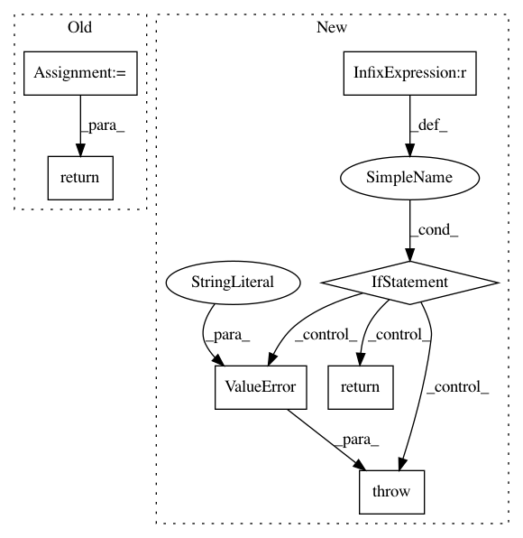

44edfba78536668c2240e8e722029741a547bd9a,chainercv/transforms/image/rotate.py,,rotate,#Any#Any#Any#Any#Any#,21
Before Change
elif interpolation == PIL.Image.BILINEAR:
interpolation_order = 1
elif interpolation == PIL.Image.BICUBIC:
interpolation_order = 3
return scipy.ndimage.rotate(
img, angle, axes=(2, 1), reshape=expand,
order=interpolation_order, cval=fill)
After Change
returns an array :obj:`out_img` that is the result of rotation.
if chainer.config.cv_rotate_backend == "cv2":
if _cv2_available:
return _rotate_cv2(img, angle, expand, fill, interpolation)
else:
warnings.warn(
"Although `chainer.config.cv_rotate_backend == "cv2"`, "
"cv2 is not found. As a fallback option, rotate uses "
"PIL. Either install cv2 or set "
"`chainer.global_config.cv_rotate_backend = "PIL"` to "
"suppress this warning.")
return _rotate_pil(img, angle, expand, fill, interpolation)
elif chainer.config.cv_rotate_backend == "PIL":
return _rotate_pil(img, angle, expand, fill, interpolation)
else:
raise ValueError("chainer.config.cv_rotate_backend should be "
"either "cv2" or "PIL".")
In pattern: SUPERPATTERN
Frequency: 4
Non-data size: 7
Instances
Project Name: chainer/chainercv
Commit Name: 44edfba78536668c2240e8e722029741a547bd9a
Time: 2018-11-20
Author: yuyuniitani@gmail.com
File Name: chainercv/transforms/image/rotate.py
Class Name:
Method Name: rotate
Project Name: tensorlayer/tensorlayer
Commit Name: 58f4620699ac8e8eecbc0746dfcc8a497f01d6ba
Time: 2018-06-08
Author: contact@jonathandekhtiar.eu
File Name: tensorlayer/activation.py
Class Name:
Method Name: leaky_relu
Project Name: chainer/chainercv
Commit Name: b776ae08e9e676435c5cf8d1f31a86dfd3e1897f
Time: 2018-10-20
Author: yuyuniitani@gmail.com
File Name: chainercv/transforms/image/resize.py
Class Name:
Method Name: resize
Project Name: GPflow/GPflow
Commit Name: f4559a3d47510f776b3e38d5aceb07ee4b4b0ea9
Time: 2017-11-24
Author: james@prowler.io
File Name: gpflow/transforms.py
Class Name: DiagMatrix
Method Name: backward